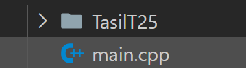
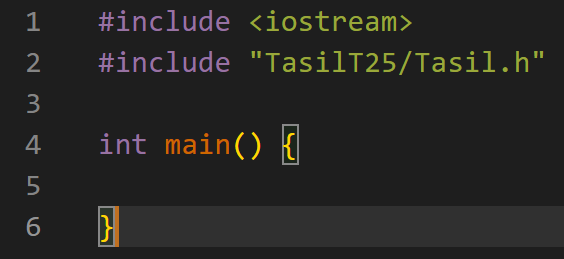
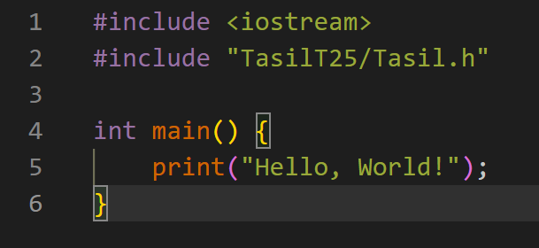
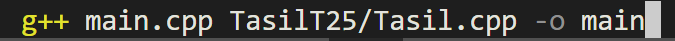
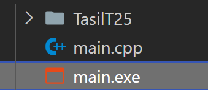
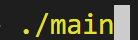
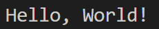

#include <iostream>
#include "Tasil/Tasil.h"
int main()
{
std::cout << "Hello" << std::endl;
wait(1); // Espera 1 segundo.
std::cout << "World!" << std::endl;
}Sobre
Biblioteca simplificadora, gratuita e portátil de C++ (Tasil)
Documentação
#include <iostream>
#include "Tasil/Tasil.h"
int main()
{
autorun("std::cout << \"Hello, World!\";"); // Output: Hello, World!
}#include <iostream>
#include "Tasil/Tasil.h"
int main()
{
std::cout << getUsername() << std::endl; // Output:
}#include <iostream>
#include "Tasil/Tasil.h"
int main()
{
backpack_put("ID", "INFORMAÇÃO"); // Guarda a informação numa pasta (o ID serve para você abrir ela depois)
}#include <iostream>
#include "Tasil/Tasil.h"
int main()
{
std::cout << backpack_open("ID"); // Irá mostrar a informação guardada de acordo com o ID
}#include <iostream>
#include "Tasil/Tasil.h"
int main()
{
backpack_remove("ID") // Irá remover a informação de acordo com o ID
}#include <iostream>
#include "Tasil/Tasil.h"
int main()
{
std::cout << os() << std::endl; // Output:
}Exemplos
O que se pode criar com o Tasil?
Terminal C++
Com o Tasil, fica muito mais fácil criar terminais C++, basta usar: autorun("std::cout <<\"Hello, World!\";");
Terminal PowerShell
Com o Tasil, fica muito mais fácil criar terminais PowerShell, basta usar: ps("echo Hello, World!");
Leitor de arquivo
Com o Tasil, fica muito mais fácil ler arquivos, basta usar: readfile("filename");
Download
Ultima versão: T?
Tutorial
1. Depois que abaixar a pasta, descompacte ela, e ponha no mesmo diretório que o seu arquivo principal
2. Ponha essa estrutura no main.cpp:
3. Ponha qualquer coisa para testar:
4. Abra o terminal, e ponha isso:
5. Irá criar o arquivo chamado "main.exe":
6. Execute o arquivo .exe:
7. Agora seja feliz :)
